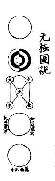
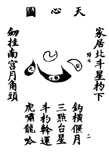
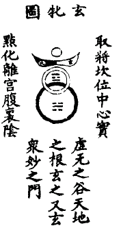
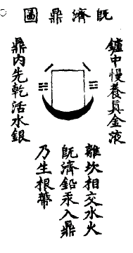
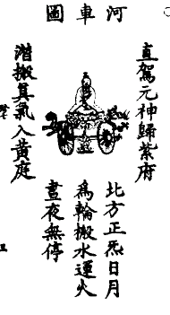
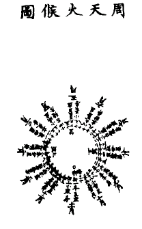
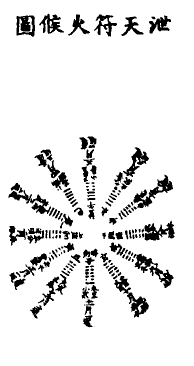
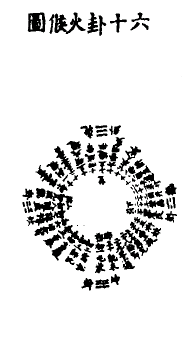
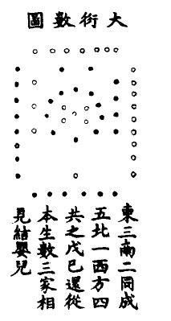
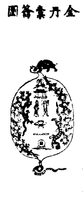

卷一
紫虚了真子萧延芝元瑞述
无极图说

○者，道也。形而上者谓之道，斯乃道之体也。无极而太极 ，含三为一，中具五十五数，中○者乃其本体也。太极一判，两仪生焉。
，含三为一，中具五十五数，中○者乃其本体也。太极一判，两仪生焉。 之动根乎阴也，
之动根乎阴也， 之静根乎阳也。
之静根乎阳也。 此阳变阴，合而生水、火、土、金、木也。水，生数一，成数六；火生数二，成数七；木生数三，成数八；金生数四，成数九；土生数五，成数十，此五行生成之数也。天一、地二、天三、地四、天五、地六、天七、地八、天九、地十。天地之数五十有五，此阳奇阴偶之数也。一阴一阳之谓道，生生不穷之谓易。一者，奇数也；二者，偶数也。阳奇阴偶即二以生三也。纯乾性也，两乾而成坤命也，犹精与气也。乾再索坤而成坎，坎中之阳乃元气也，所谓乾道成男是也。坤再索乾而成离，离中之阴乃真精也，所谓坤道成女是也。○乾男坤女以气化者言也，离者，日之象也；坎者，月之象也，日月合而成（图）。易者，日用常行易简之道也，千变万化而未尝灭焉。然则形中之精，寂然不动，盖刚健中正纯粹精者存乃性之所寄也，为命之根矣；心中之神感而遂通，盖喜怒哀乐爱恶欲者存乃命之所寄也，为性之枢矣。惩忿则心火下降，窒欲则肾水上升，君子黄中通理，正位居体，美在其中，畅于四肢，故修此而吉也。
此阳变阴，合而生水、火、土、金、木也。水，生数一，成数六；火生数二，成数七；木生数三，成数八；金生数四，成数九；土生数五，成数十，此五行生成之数也。天一、地二、天三、地四、天五、地六、天七、地八、天九、地十。天地之数五十有五，此阳奇阴偶之数也。一阴一阳之谓道，生生不穷之谓易。一者，奇数也；二者，偶数也。阳奇阴偶即二以生三也。纯乾性也，两乾而成坤命也，犹精与气也。乾再索坤而成坎，坎中之阳乃元气也，所谓乾道成男是也。坤再索乾而成离，离中之阴乃真精也，所谓坤道成女是也。○乾男坤女以气化者言也，离者，日之象也；坎者，月之象也，日月合而成（图）。易者，日用常行易简之道也，千变万化而未尝灭焉。然则形中之精，寂然不动，盖刚健中正纯粹精者存乃性之所寄也，为命之根矣；心中之神感而遂通，盖喜怒哀乐爱恶欲者存乃命之所寄也，为性之枢矣。惩忿则心火下降，窒欲则肾水上升，君子黄中通理，正位居体，美在其中，畅于四肢，故修此而吉也。
于是闲邪存诚，终日如愚，天理纯全，归根曰静，静曰复命，动极而静，静极复动也。万物化生○，以形化者言也。形而下者谓之器，斯乃道之用也。南轩曰：真识根源谓之知道。知此道者，则可以超出乎造化之外，卓然而独存矣。
家居北斗星杓下
天心图

玄牝图

既济鼎图

河车图

周天火候图

泄天符火候图

子（复卦），十一月
谓之一还，微微小火宜温养，初九潜龙不可煅。
丑（临卦），十二月
谓之二还，须逢九二见龙时，此时阴阳方顾恋。
寅（泰卦），正月
谓之三还，一返寅月屯爻方直事，始堪进火炼红铅。
卯（壮卦），二月
木液旺在卯，丹头宜沐浴。
辰（夬卦），三月
谓之四还，二返返中仔细辨工夫，文后更宜加一武。
巳（乾卦），四月
谓之五还，三返此月又当行武火，牵将白虎产明珠。
午（媾卦），五月
谓之六还，四返沐浴后，退符抽添犹虑险。
未（遯卦），六月
谓之七还五返，武火临终用一文，桃花已落惟留蒂。
申（否卦），七月
谓之八还六返，两头文，中间武。
酉（观卦），八月
金精旺在酉，沐浴后养火。
戌（剥卦），九月
谓之九还七返，蒙受生成，火府于戌。
亥（坤卦），十月
脱胎吞入腹，我命不由天，功夫入坤宫，还丹道已穷。
六十卦火候图

或曰：卦有六十四，止用六十，何耶？夫，乾坤为门户，为鼎器，坎离为匡廓，为枢辖。象天地日月，包藏万物不用而用之以道也。右六十卦计三百六十爻，并乾坤坎离四卦共三百八十四爻，计万有一千五百二十策，以周万物之数，朝暮各用一卦，计十二爻，一爻当一时；言其小，则象一月三百六十时；言其大，则象一年三百六十日；言其运，则象周天之度数，得象忘言其意明矣。
大衍数图

东三南二同成五，北一西方四共之，戊己还从本生数，三家相见结婴儿。
夫天地未有无用之数，故一三五七九阳，奇数也，天数二十有五；二四六八十阴，偶数也，地数三十；天地之数总而五十有五，大衍之数五十者，去五为五行之本，其用四十有九者，又去一，以象太极之不动，于此可以知其有体有用矣。《钟离传道集》曰进火有数。
金丹橐龠图

橐龠歌
乾坤橐龠鼓有数，离坎刀圭采有时。铅龙升兮汞龙降，龟蛇上下两相持。
天上日头地下转，海底婵娟天上飞。乾坤日月本不运，皆因斗柄转其机。
人心若与天心合，颠倒阴阳止片时。虎龙战罢三田静，拾取玄珠种在泥。
黄婆媒合入中宫，婴儿姹女相追随。年中用月日用时，刻里功夫妙更奇。
暗约斗牛共欢会，天机深远少人知。进火烹煎天地髓，开炉沐浴霞迸辉。
九还七返在片晌，真炁熏蒸达四肢。温养婴儿惟藉母，守城野战要防危。
一时八刻一周天，十二时辰准一年。始于复卦终于剥，朝屯暮蒙有后前。
春夏秋冬依次第，炼至坤宫始凝坚。不须究易行卦气，身中自有一坤乾。
天地日月若交会，打破虚空只一拳。宇宙造化在吾手，向上天机不妄传。
惟人至尊而至贵，可炼金液大还丹。还丹口诀无多子，炼就移身谒洞天。
金液还丹赋（金液还返，结成大丹）
求道至近，学仙岂难？采玉壶之大药，炼金液之还丹。探赤水之玄珠，龟蛇吐咽；运西方之至宝，龙虎盘旋。奥自紫府开而海峤云生，黄河翻而泥丸浪滚。虽乾坤同体，兑谓鼎器，然铅汞二物，互为根本。丹源何在？存三要以守一元。金液结成，自九还而周七返。是丹也，恍惚无物；杳冥有精。循八卦兮合四象，聚三花兮攒五行。味出庚辛，须定志以采取；卦属艮巽，要知时而旺生。始而炼金液以交媾，终则调玉浆而养成。壶中日月之循环；须明宗祖，身里夫妻之交合；要识根径。由是升降之际；当辨君臣；来往之间，仍分主客。凝绝耳韵，调匀鼻息，审药老嫩，明进退之寸尺；抱一孜专，守雌雄之黑白。望焉飞汞以擒魂，晦则引铅而制魄。推排符火，卷舒性内之阴阳；呼吸风云，烹炼身中之炁液。大抵人炼乎气，须和合于四象，气纯乎阳，自消磨于众阴。东捉青龙；西捉白虎；北寻玄武；南寻赤禽；惟中宫和会以共处，以土釜封藏而必深。有动有静；有气无质，知吉知凶，知机知心。能酿就自然之酒，慢调成无韵之琴。安排既未之鼎炉，熬成白雪，鼓动乾坤之橐龠，煅作真金。盖始者金木间隔，孰使交并？金木混融，未归淘汰。自金井一提，水虎潜伏；迨金锁一发，火龙相会。是宜满黄金之鼎，而调味固济，饵紫金之膏，而凝神闭兑。周流真气以充盈，出入元神之广大，火升水降，抽添善了于屯蒙；辐辏轮成，运用默符于否泰，又当知药物调和，悟者甚易；火候消息，行之恐难！一十月工夫，存渺渺绵绵之息；三万年气数，在来来往往之间。所以养丹田之宝，其宝长在；夺丹鼎之珠，此珠复还。既得此超生之诀，常开其生死之关，驾动河车，离尘世尾闾之海；移归天谷，上昆仑蓬岛之山，噫！万般仙诀，契论歌诗。一窍玄关，精神气穴。升金门，朝金阙，膺帝诏之召，严金相，证金仙，脱圣胎之结，此其饵金液之丹，成金刚之体，而性命双圆，妙难轻泄。
金液还丹诗
搬液上昆山，工夫信不难。往来敲玉洞，还返炼金丹。
西采存三药，中归守一坛。片时间下手，七返后成团。
鼓动乾坤橐，循环日月滩。玄关真一窍，直路彻天端。
金液还丹论
道以心为用也，或者疑之！至人辨焉。夫道者，心之体；心者，道之用。道融于心，心会于道。道外无馀心，心外无馀道也。能知运用者，以道观心，心即道也。以心贯道，道即心也。是心也，非人心之心，乃天心之心也。天之居于北极，为造化之枢机者，此心也。故斗杓一运，四时应节，五行顺序，寒暑中度，阴阳得宜矣。在人亦然，首有五宫，上应九隅，其中一宫曰天心，一曰紫府、天渊、天轮、天关、天京、山都关、昆仑顶，其名颇众。总而言之曰“玄关一窍”，运用于此者，可不辨药材所产之川源，火候细微之要旨，以至温养而成丹，皆不离乎此心之为用也。尝谓药愈采而愈多，火渐炼而渐结。其采药之初也：动乾坤之橐龠，取离坎之刀圭，凝神聚炁，调匀鼻息，呼吸应手，迨夫神气之入乎其根也。闭极则失于急；纵放则失于荡。惟使其绵绵续续，勿令间断矣，然后神久自凝，息久自定，其运火之功也。一刚一柔，一文一武，进寸而退尺，前短而后长；分宾主，立君臣，使其阴符阳火进退之得其宜也。火数太燥则汞上飞矣，水铢太滥则铅下消矣，惟使其斤两调匀，法度准确，无进火退符之昧其用也。由是依约卦爻，以十二月促于一时之内，阴阳升降以为运火之则也。一阳之生始乎复也，时为子焉，微养其潜龙临；丑也，温养其见龙；泰，寅也，火生于寅屯之直事，故进符用武火焉；壮，卯也，阳中含阴故沐浴焉；夬，辰也，文火以炼之；乾，终巳也，火加武焉；自子至巳，纯阳用事，乃内阴求外阳也，一阴之生始乎姤也。时为午焉，火旺于午，故退符用文火焉。遯，未也，时为六月，故火武焉，则不为盛夏之浓霜矣；否，申也，微火以调之；观，酉也，阴中含阳，故沐浴后养火也；剥，戌也，火库于戌，蒙受生成，火用武矣；坤，终于亥，脱胎入腹以成变化也。自午至亥，纯阴用事，乃外阳附内阴也。然火生于寅，旺于午，库于戌，故抽添之妙，在于屯蒙也。噫！始复终坤，皆以卦象则之也。进退以象春夏秋冬之相代，抽添以象日月圆缺之相仍；火之未燃也，藉巽风以吹之；火之既燃也，资坤水以沃之。火功一止，气液混融，铅汞交结，姹女敛袂，婴儿仰从，守于中宫，合为一也。七返九还之秘毕于此矣。向使运火失宜，异证百出，金虎与木龙飞腾，坎男与离女奔逸，虽黄帝临炉，太乙执火，八公锻炼，欲结成丹不可得也，可不谨审而调燮之？故丹经曰：既得真铅又难真火，岂轻议哉！虽然金丹之道皆法象也，以铅汞为体，当知铅精汞髓皆譬喻也；以坎离为名，当知坎男离女皆虚名也；以龙虎为形，又当知火龙水虎非有形也；谓如黄芽、白雪、神水、华池皆非可见可用之物乎？要之，配合而调和，抽添而运用，故此丹药非金石、草木之料，此火候非年月日时之数，当从本根实地而为之：炼形化炁，炼炁化神，不过夺天地一点真阳，始乎有为而终则无为也。或者泥象以安炉，著相而造鼎，执著火候，认为顽空则谬矣！吁！否极则泰，动极则静，静曰复命，真精自朝，真息自定，谷神自栖，三尸自灭，心中无心，念中无念，身入无形，与道为一矣。
金丹大成集
卷二
金丹问答
问曰：如何谓之金液还丹？答曰：金液者，金水也。金为水母，母隐子胎，因有还丹之号也。前贤有曰：丹者，丹田也。液者，肺液也。以肺液还于丹田，故曰金液还丹。
问曰：何谓铅汞？答曰：非凡黑锡、水银也。真一子曰：铅是天地之父母，阴阳之根基。盖圣人采天地父母之根而为大丹之基，采阴阳纯粹之精而为大丹之质，且非常物造作也。汞性好飞，遇铅乃结，以其子母相恋也。
问曰：何谓火？答曰：火者，太阳真气，乃坎中之阳也。紫清真人曰：坎中起火是也。
问曰：何谓候？答曰：五日为一候，是甲子一终也。日有十二时，五日六十时，终一甲子也。紫阳曰：一刻之功夫，自有一年之节候，以起火之际，顷刻一周天。
又问：火候如何用？答曰：年中用月，月中用日，日中用时，时中用刻也。
问曰：何谓真一？答曰：人能将自己天真安于天谷之内，乃守真一之道也。金洞主云：真一者，在于北极太渊之中也。
问曰：何谓动静？答曰：阳主动，阴主静。翠虚曰：动中求静，静中有为，动静有作，口口传之。
问曰：何谓九还？答曰：金生四，成数九。还者，自上而还下。九乃老阳之数。阴真君曰：从子至申为九还，亦顺下也。
问曰：何谓七返？答曰：火生二，成数七。返者，自下而返上。七乃少阳之数，阴真君曰：从寅至申为七返，亦逆上也。
问曰：何谓炉？答曰：上品丹法以神为炉，以性为药，以定为水，以慧为火。中品丹法以神为炉，以气为药，以日为火，以月为水。下品丹法以身为炉，以气为药，以心为火，以肾为水，又有偃月炉，玉炉。
问曰：何谓鼎？答曰：鲍真人云：金鼎近泥丸，黄帝铸九鼎，是也。
问曰：何谓药物？答曰：即此药物顺即成人，逆则成丹，五行颠倒，大地七宝，五行顺行，法界火坑。百姓日用而不知也！紫清曰：“采药物于不动之中”是也。
问曰：神水华池何也？答曰：李筌云：还丹之要，在于神水华池。紫阳曰：以铅入汞，名曰神水，以汞投铅，名曰华池。海蟾曰：从来神水出高源。紫清曰：华池正在气海内。
问曰：何谓三关？答曰：头为天关，足为地关，手为人关。
问曰：何谓内三要？答曰：第一要太渊池也。第二要绛宫也。第三要地户也。
问曰：何谓外三要？答曰：口之与鼻共三窍，是神气往来之门户，下功之际，调鼻息，缄舌气，闭兑也。
问曰：何谓兑？答曰：真一子云：兑，口也。
问曰：婴儿姹女正在何处？答曰：婴儿在肾，姹女在心。
问曰：肾属水为阴，婴儿属阳，心属火为阳，姹女属阴，何缘居此？答曰：肾属坎阴中有阳，乃真阳也。心属离阳中有阴，乃真阴也。
问曰：泥丸宫正在何处？答曰：头有九宫，中曰泥丸。
问曰：何谓金公？答曰：金边著公，乃铅也。紫阳曰：要能制伏觅金公。
问曰：何谓黄婆？答曰：黄乃土之色，位属坤，因取名焉。紫清曰：金公无言，姹女死，黄婆不老，犹怀胎。
问曰：呼吸何如？答曰：呼出心与肺，吸入肾与肝，呼则接天根，吸则接地根，呼则龙吟云起，吸则虎啸风生，呼吸风云，凝成金液。
问曰：何谓琼浆玉液？答曰：皆神水也。
问曰：何谓神气？答曰：神是火，火属心。气是药，药属身。神气，子母也。虚靖天师云：气者生之元也，神者生之制，持满驭神，专其抱一，神依气住，神气相合乃可长生。三茅真君曰：气是添年药，心为使气神，若知行气主，便是得仙人。
问曰：何谓十二楼？答曰：人之喉咙管有十二节是也。
问曰：何谓帘帷？答曰：眼是也。下功之际含光。云房曰：闭户垂帘默默窥也。
问曰：何谓子午？答曰：子午乃天地之中也，在天为日月，在人为心肾，在时为子午，在卦为坎离，在方为南北。
问曰：何谓五位相得而各有合？答曰：天地五十五数，故乾得一九合而成十，坤得四六合而成十，巽兑得二八合而成十，震艮得三七合而成十，离得五坎得十，坎离无偶所以自合也。以数言之则得天地之中数，以爻言之则得天地之中爻，以位言之则的天地之中位，坎离为用不以大乎。
问曰：何谓五岳？答曰：五岳真形图曰：在人之头。紫清以有巾藏五岳冠之句。
问曰：何谓玄牝？答曰：在上曰玄，在下曰牝。玄关一窍左曰玄，右曰牝。
问曰：何谓玄牝之门？答曰：鼻通天气曰玄门，口通地气曰牝户，口鼻乃玄牝门户也。
问曰：何谓三男三女？答曰：乾道索坤，长男曰震，中男曰坎，少男曰艮。坤道索乾，长女曰巽，中女曰离，少女曰兑。
问曰：何谓火龙水虎？答曰：虎，西方金也。金生水反藏形于水。龙，东方木也，木生火反受克于火。太白真君曰：“五行不顺行，虎向水中生；五行颠倒术，龙从火里出”是也。
问曰：何谓分至？答曰：子时象冬至，阴极而阳生，午时象夏至，阳极而阴生。卯时象春分，阳中含阴，酉时象秋分，阴中含阳，人身亦有分至。紫阳曰：以身心分上下两弦，以神气别冬夏二至。
问曰：何谓沐浴？答曰：真气熏蒸、神水灌溉为沐浴，太上曰：灌以甘泉涤其垢污，出自华池后归坤户。杏林曰：沐浴资神水，是也。
问曰：何谓抽添？答曰：既抽铅于肘后，须添汞于中黄。传道集曰：“可抽之时不可不添”是也。
问曰：何谓搬运？答曰：搬金精于肘后，运玉液于泥丸，下手工夫口诀存焉。
问曰：何谓三田？答曰：脑为上田，心为中田，气海为下田。若得斗柄之机斡运，则上下循环如天河之流转也。
问：背后三关？答曰：脑后曰玉枕关，夹脊曰辘轳关，水火之际曰尾闾关。
问曰：何谓神室？答曰：元神所居之室也。朗然子曰：“未明神室千般扰，达了心田万事闲。”
问：三花聚顶？答曰：神气精混而为一也。玄关一窍乃神气精之穴也。
问：五气朝元？答曰：五藏真气上朝于天元也。
问：和合四象？答曰：眼不视而魂在肝，耳不闻而精在肾，舌不动而神在心，鼻不嗅而魄在肺，精神魂魄聚于意土也。
问曰：马牙、真主人、神符、白雪？答曰：皆铅汞之总名也。
问：河车？答曰：北方正气名曰河车，左曰日轮，右曰月轮，搬负正气，运藏元阳，应节顺行，下手无非此车之力。
问曰：老嫩何也？答曰：采药之时，审其老嫩。彭鹤林曰：嫩时须采，老时枯。紫阳曰：铅见癸生须急采，金逢望远不堪尝，是也。
问：浮沉？答曰：铅浮而银沉也。
问：清浊？答曰：阳清而阴浊也。清者浮之于上，浊者沉之于下，修丹者留清去浊，盖清属阳而浊属阴也。
问：五行相克？答曰：金碧经云：金木相伐，水火相克，土旺金乡，三物俱丧。四海辐辏，以致太平，并由中宫土德之功也。
问曰：往来何也？答曰：子往午来，阴符阳火自子进符至辰巳，自午退符至戌亥，始复终坤，皆以卦象则之，一消一长，一往一来，以成其变化，易曰：阖户谓之坤，辟户谓之乾，一阖一辟谓之变，往来不穷谓之通也。
问：雌雄？答曰：雌，阴，雄阳也。一阴一阳谓之道，孤阴寡阳不能自生，参同契曰：雌雄相错，以类相求，注曰：雄，金砂也，雌，火汞也。相须含吐，类聚生成，以为神药也。
问：防危？答曰：防火候之差失，忌梦寐之昏迷。翠虚曰：精生有时，时至神知，百刻之中，切忌昏迷。
问：交合？答曰：磁石吸铁，隔碍潜通。
问：有无？答曰：金碧经曰：有无互相制，上有青龙居，两无宗一有，灵化妙难窥。
问：刑德？答曰：阳为德，德出则万物生，阴为刑，刑出则万物死。故二月阳中含阴而榆荚落，象金砂随阴气动静落在胎中，故曰归根也。八月阴中含阳而荞麦生象金，水随阳气滋液于鼎内，故卯酉乃刑德相负，阴阳两停，故息符火也。
问：黑白？答曰：参同契曰：知白守黑，神明自来。白者，金也。黑者，水也。以金水之根而为药基矣。
问：寒暑？答曰：真一子曰：不应刻漏，风雨不调，水旱相伐。或阳火过刻，或阴符失节。凝冬变为大暑；盛夏反作浓霜，火候过差，灵汞飞走，运火之士可不谨之！
问：晦朔？答曰：参同契曰：晦朔之间，合符中行，乃金水符合之际也。
问：固济？答曰：太白真人曰：“固济胎不泄，变化在须夷”。言其水火既济，闭固神室，而不可使之泄漏。
问：圣胎？答曰：无质生质，结成圣胎。辛勤保护十月，如幼女之初怀孕，似小龙之乍养珠，盖神气始凝结，极易踈失也。
问：四正？答曰：子午卯酉为四正，玄关一窍四正宫也。
问：黄庭正在何处？答曰：在膀胱之上，脾之下，肾之前，肝之左，肺之右也。
问：金乌玉兔：答曰：日中乌，比心中之液也，月中兔，比肾中之气也。
问：炼形？答曰：炼形化气，炼气化神，炼神合道也。金洞主曰：以精炼形非凡砂石。
问：紫阳谓心肾非坎离，何也？答曰：心肾特坎离之体耳，有体有用。
问：所用者何也？答曰：天心乃心之用也。属离。形乃肾之用也，属坎，交媾之际，运用于此矣。
问：功夫？答曰：知时而交媾，进火而防危，阳生而野战，刑德而沐浴，以至温养成丹也。
问：野战？答曰：龙虎经曰：文以怀柔，武以讨叛。紫阳曰：守城野战知凶吉，增得灵砂满鼎红。
问：温养？答曰：杏林曰：温养象周星。毗陵曰：金鼎常留汤用暖，玉炉不要火教寒，是也。
问：烹炼？答曰：烹金鼎，炼玉炉。口诀存焉。
问：赏罚？答曰：春气发生谓之赏，乃巳前阳火之候也；秋气杀物谓之罚，乃午后阴符之候也。
问：守城？答曰：抱元守一而凝神聚气也。
问：堤防：答曰：驱除杂念而专心不二也。
问：神庐者，何也？答曰：鼻也，乃神气出入之门，黄庭经曰：神庐之中当修治，呼吸庐间入丹田。
问：太一含真？答曰：守真一于天谷，气入玄元，即达本来天真。答上曰：真道养神，若能守我在死气之关，令七祖枯骨皆有生气。生我者道，活我者神，将神守道，以道养神是也。
问：三尸？答曰：中黄经曰：一者上虫，居脑中；二者中虫，居名堂；三者下虫，居腹胃；名曰彭琚，彭质，彭矫也。恶人进道。善人退志，上田乃元神所居之宫，惟人不能开此关，被尸虫居之，生死轮回无有了期，若能握元神，栖于本宫，则尸虫自灭，真息自定，所谓一窍开而百窍齐开，大关通而百骸尽通，则天真降灵，不神之神所以神也。
问：胎息：答曰：能守真一，则息不往来，如在母胞胎之中，谓之大定也。
问：玉池：答曰：口也。黄庭经曰：玉池清水灌灵根是也。
问：橐龠：答曰：橐乃无底囊，龠乃三孔笛，又是铁匠手中所弄鼓风之物也。老子曰：天地之间，其犹橐龠乎。升降论曰：人能效天地橐龠之用，开则气出，阖则气入，出则如地气之上升，入则如天气之下降，一升一降，自可与天地齐长久矣。
问：五芽？答曰：乃五脏之真气。中黄经曰：子能守之三虫弃，得见五芽九真气。
问：屯蒙？答曰：道枢曰：坎者，水也，一变为水泽之节，再变为水雷之屯，其爻居寅。离者，火也，一变为火山之旅，再变为火风之鼎，三变为山水之蒙，其爻居戌，抽添水火在于寅戌，十二卦气在于屯蒙运用。
问：采日精月华？答曰：非外之日月也。采心中真液，肾中真气也。
问：内外八卦？答曰：头为乾，足为坤，膀胱为艮，胆为巽，肾为坎，心为离，肝为震，肺为兑也。
问：修炼待时，然后下手？答曰：有时中之功夫，有刻中之功夫，毗陵曰：炼丹不用寻冬至，身中自有一阳生，马自然曰：不择时中分子午，无爻卦内别乾坤，此皆刻中之功夫也。
问：金丹形象如何？答曰：形若弹丸，色同朱橘。抱朴子曰：大如弹丸，黄如橘。中有嘉味甘如蜜，沙门得之以禅定，黄衣得之即超逸，审之行之天地毕。元枢歌曰：君不见一粒金丹何赫赤，大如弹丸黄如橘，人人分上本圆成，夜夜灵光常满室。盖人人具足，个个圆成，当知非有形之物也。吕公曰：还丹本无质也。
问：玄关一窍正在何处？答曰：在人之首，功夫容易下手的难寻，若不遇真师摩顶授记皆妄为矣。
问：真空？答曰：返本还元为真空，杏林曰：不知丹诀妙，终日玩真空。
问：作用？答曰：螟蛉咒子传精送神。
问：出神？答曰：能守真一，真炁自凝，阳神自聚，盖以一心运诸气，气住则神住，真精积力久，功成行满，然后调神出壳也。
问：超脱？答曰：超者，出也。是出神也。脱者，脱换凡躯也，皆天门出，前圣有脱壳之验，六祖七层宝塔出，钟吕三级红楼出，海蟾公鹤冲天门出，诗曰：功成须是出神京，内院繁华勿累身，会取五仙超脱法，炼成仙质离凡尘。
问：尸解？答曰：尸解有五，金木水火土也，又有积功累行而白日飞升者，徽宗皇帝尊道篇末曰：亘古迨今飞升者，千有余人，拔宅者八十余家。（出真诰）
问：金丹之道不亦难乎？答曰：是不难也。紫阳曰：悟者惟简惟易，迷者愈繁愈难。杏林曰：简易之语不过半句，证验之效只在片时。翠虚曰：药之不远采不难。毗陵曰：至道不繁人自昧。紫清曰：只一言，贯穿万卷仙经，但片晌工夫，无穷逸乐。师曰：下手功夫容易，坚心守道为难也。
金丹大成集
卷三
七言绝句（八十一首）
一
老子明开众妙门，一开一阖应乾坤；果于罔象无形处，有个长生不死根。
二
得道那堪正少年，玉炉养火不曾闲；昆仑山上黄华路，时引元神去复还。
三
大道元来一也无，若能守一我神居；此心莹若潭心月，不滞丝毫真自如。
四
妙宝无过汞与铅，依时采取自烹煎；从来至道无多事，自是时人识不全！
五
妙运三田须上下，自知一体合西东；几回笑指昆山上，夹脊分明有路通。
六
拨动天轮旋日月，须更海峤起云雷；风涛汹涌波澄后，散作甘泉润九垓。
七
一诀分明说与贤，动中求静妙中玄；我家活计从来别，夜夜栽培火里莲。
八
此道玄中妙更玄，古今父子不相传；莫将火候为儿戏，须共真师仔细研。
九
大药三般精气神，天然子母互相亲；回风混合归真体，锻炼功夫日日新。
十
水火从来一处居，看时似有觅时无；细心调燮文兼武，片晌教君结玉酥。
十一
微微小火养潜龙，见在田时也一同；交得三阳逢泰卦，始堪进火法神功。
十二
弦前弦后辨屯蒙，进退抽添运火功；虑险防危须沐浴，还丹脱体入坤宫。
十三
木液金精居卯酉，只宜沐浴大丹头；三三灌溉资神水，不用工夫运火牛。
十四
以时易日法神功，仔细穷推总一同；九朔九回为九转，金丹还返入坤宫。
十五
一时辰内还丹结，夺得乾坤大造功；金液余残收拾取，莫教随雨更随风。
十六
木金间隔要相交，白雪黄芽共一苞；定意如如行火候，便从复卦运初爻。
十七
云收雨散丹凝后，琴瑟谐和了当时；切忌不须行火候，不知止足必倾危。
十八
铅炉汞鼎少人知，木液金精旺有时；野战更须行火候，抽添运用莫令迟。
十九
二八门中达者稀，弦前弦后正当时；细心调燮文兼武，端的无中养就儿。
二十
金乌夜夜宿西川，离坎交时妙更玄；温养婴儿惟藉母，外炉增减象周天。
二十一
身中阳复为冬至，便好临炉炼大丹；托仗黄婆与媒合，夫妻共室镇同欢。
二十二
恰恰相当妙绝奇，中秋天上月圆时；阳生急采毋令缓，进火功夫要虑危。
二十三
炼丹仔细辨功夫，昼夜殷勤守药炉；若遇一阳才起复，嫩时须采老时枯。
二十四
生铅生汞为丹祖，聘作夫妻共一心；从此抽添方进火，玉炉炼作一团金。
二十五
阴阳还返结成丹，九转无亏火力全；若到坤宫受气足，只须沐浴任天然。
二十六
依时进火要孜专，勿遣猿猿取次攀；花露初开须忌触，锁居土釜莫抽关。
二十七
上下三宫三寸田，自耕自种自烹煎；依时采取须教密，进退抽添象缺圆。
二十八
阆苑蟠桃自熟时，摘来服饵莫教迟；几回下手潜偷处，无限神仙总不知。
二十九
熟铅熟汞最堪烹，谁道金丹结不成；若也学人常得饵，伫看白日羽翰生。
三十
学人若要觅黄芽，两处根源共一家；七返九还须识主，功夫毫发不容差！
三十一
阴居于上阳居下，阳气先生阴后随；配合虎龙交媾处，此时如过小桥时。
三十二
调和铅汞不终朝，密固根源养圣胞；先使日魂擒月魄，阴文阳武运初爻。
三十三
初九潜龙回一阳，分明变化在中央；巽风呼吸吹乾火，炼得炉中胜似霜。
三十四
玉炉练就长生药，金鼎烧成不死丹；颠倒坎离由戊己，分明我命不由天。
三十五
夜来酒醒已三更，自觉情浓意转深；玉洞试将灵剑击，便教虎啸与龙吟。
三十六
河车搬运上昆山，不动纤毫到玉关；妙在八门牢闭锁，阴阳一气自循环。
三十七
酒是良朋伴是花，岭头时驾紫河车；可怜金虎一声啸，吹散青天五彩霞。
三十八
西川岸上抬头望，无限蟾光蘸波浪；便好下功修二八，更须仔细托黄婆。
三十九
玉炉金鼎药争光，紫雾红霞映洞房；便向此时勤采取，元神归室不飞扬。
四十
朱砂鼎里绽黄花，偃月炉中发玉葩；进退短长勤采摘，一时收拾入黄家。
四十一
无功功里要勤功，功外无功合圣功；炼得丹田成至宝，任他乌兔走西东。
四十二
泝流一直上蓬莱，散作甘泉润九垓；从此丹田沾润泽，黄芽遍地一齐开。
四十三
玄珠搬运上昆山，两扇朱门日月闲；捉取四蛇并二鼠，虎龙交媾一时间。
四十四
元君端拱座玄都，三叠胎仙舞八隅；变化一阳天地震，太平因此妙工夫。
四十五
两枝剑挂南宫角，自在元神谒玉皇；从此天宫相见后，玉阶来往是寻常。
四十六
霭霭烟笼十二楼，绛宫清静万神游；有人问我家何处？占得风光最上头。
四十七
几回抖擞上昆仑，运动璇玑造化分；昼夜周而还复始，婴儿从此命长存。
四十八
玉炉霭霭腾云气，金谷蒙蒙长紫芝；神水时时勤灌溉，留连毋使火龙飞。
四十九
西山白虎放癫狂，东海青龙不可当；坤母若来相制伏，一齐捉入洞中藏。
五十
外道邪魔忽逞威，七星宝剑向前挥；果于鬼窟交锋处，夺得明珠一颗归。
五十一
自然宗祖一灵台，内有长生不死胎；妙运阴阳还返后，周回卦气八门开。
五十二
身中一窍名玄牝，的在三关要路头；若也知时能运用，木金交并自沉浮。
五十三
劈开玄牝露双关，锻炼功夫不等闲；学者要知端的处，直须北斗面南看。
五十四
大道根茎识者稀，常人日用孰能知？为君指出神仙窟，一窍弯弯似月眉。
五十五
几回抖擞上昆仑，足蹑玄关众妙门；仗剑擘开天地锁，金乌玉兔自相吞。
五十六
昨宵姹女启灵扉，窥见神仙会紫微；北斗南辰前后布，两轮日月往来飞。
五十七
仔细思量是妙哉，朝朝满劝九霞杯；能教地魄搬精转，自有天魂祝寿来。
五十八
炼己修心义最深，修心须要识天心；神仙妙诀无多子，练就阳神消众阴。
五十九
昆仑一直至泥丸，镇日追攀自往还；若要长生兼出世，到头不离自身间。
六十
小小壶中别一天，铁牛耕地种金莲；这般景象家家有，因甚时人不学仙？
六十一
碧潭深处捉明珠，翻手抛来上太虚；托仗黄婆收拾得，化为金液结凝酥。
六十二
修丹须要觅根源，产在先天与后天；若得谷神长不死，此身何患不为仙。
六十三
执文泥象皆非实，得象忘言始合真；大抵修丹皆法象，由来万化在人身。
六十四
仙经万卷重重说，道在常人日用间；若也自能颠倒运，不劳万水与千山。
六十五
求仙恼乱几多人，为爱修真未识真；若得红铅并黑汞，炼成至宝出嚣尘。
六十六
虽然小小一壶中，上下乾坤法象同；若也知时能运用，金乌玉兔自西东。
六十七
得悟无为是有为，潜修妙理乐希夷；几回日月滩头立，直把丝纶钓黑龟。
六十八
玉京元始座瑶台，紫气凝空殿阙开；西阁洞门三四叩，九天仙子一齐来。
六十九
恍惚之中有至精，龙吟虎啸最堪听；玄珠飞趂昆仑过，昼夜河车不暂停。
七十
独步仑山望杳冥，龙吟虎啸甚分明；玉池常滴阴阳髓，金鼎时烹日月精。
七十一
自家精气自家身，何必区区问别人；下手速修犹太晚，劝君回首莫因循。
七十二
心酸世上几多人，不解修真自损真；精漏气凋神丧去，透灵别壳入迷津。
七十三
先天先地最玄机，福浅焉能得遇之；采得真铅须急炼，劝君切莫更迟疑。
七十四
学人不识水中金，谩向诸般取次寻；只是黑铅为至宝，本居兑位寄于壬。
七十五
学人不识水乡铅，颠倒阴阳位属乾；仿佛本居于坎位，分明寄产兑宫边。
七十六
初炼还丹须入室，妇人怀孕更无殊；圣胎凝结圆成后，出入行藏岂有拘？
七十七
露心剖腹不相诬，急急躬亲大药炉；六十甲中寻甲子，三千日内著功夫。
七十八
一等旁门性好淫，强阳复去采他阴；口含天癸称为药，似恁淤沮枉用心。
七十九
指闭尾闾称是道，何曾虎啸更龙吟；元阳摇动无墙壁，错认黄泥唤作金。
八十
金丹大药最通玄，向上天机不妄传；为报近来修道者，炼精不住亦徒然。
八十一
自得仙师真口诀，敢将鄙句泄玄微；学人于此详穷究，诗内篇篇露尽机。
|
金丹大成集
卷四
乐道歌
舍妄归真隐市鄽，炼铅烹汞结还丹；
时人不慕长生道，声色萦心一梦间。了真子，惟乐道，奇哉妙在回心早；
浮名浮利总虚华，世间惟有修真好。说修真，人最多，穷通表里无一个；
因到丹山遇至人，一言与我都诀破。得诀归来试炼看，龙争虎战片时间；
云收雨散万籁寂，彻夜风雨撼万山。辟地诛茅筑神室，闭关绝俗及腥羶；
兀坐茅庐惟守一，玉炉养火不曾闲。从今踏破生死户，翻身跳出鬼门关；
昆仑顶上堪来往，时引元神去又还。惟乐道，炼金丹，五气调元玉洞宽；
拍手笑吹无孔笛，玩弄玄珠九曲湾。铅龙汞虎交媾时，一霎火焰飞烧天；
调燮火工宜仔细，刚柔文武莫纵意。朝暮屯蒙有君臣，知足常足归本位；
前行须短退须长，春夏秋冬依次第。二十八宿归一炉，水火要分前后队；
复临二卦宜温养，壮观沐浴须回避。还返工夫入坤宫，炼得坚凝成一块；
这般手段出作家，试问时人会不会？了真子，惟乐道，奇哉妙在回心早；
垢面蓬头任所宜，寂寞无人相聒恼。渴饮金浆与玉液，饥餐交梨并火枣；
两轮日月任西东，仰窥造化工夫巧。西边兑金位属酉，东边震木位属卯；
灵台皎洁无人修，玄坛寂静无人扫。炼精化气气化神，大都神气精为宝；
金木自然会交并，水怕滥兮火怕燥。如龙养珠常自顾，如鸡养卵常自抱；
金液还丹在眼前，迷者多而悟者少。有人日夜炼来餐，味胜醍醐真个好；
问我日下用工夫，不离顶门真一窍。出自虚无缥缈间，先天先地为大道。
学人得悟大还丹，于此歌中细寻讨。我若分毫误学人，万劫风刀当受考。
茅庐得意歌
茅庐七尺高，横过九尺涧，清闲一主人，怕客来恼聒。饥则淡饭三五匙，困则和衣睡一歇。为爱此清闲，万事都摆脱，夜夜曲江头，掬水弄明月，两脚翻来拗乾斗，定息凝神入气穴。琼浆酿就从天降，流遍舌端甘似蜜；九杯饮罢又九杯，清复浓兮时自啜。这境界，甚奇绝，醉抱杨妃共欢悦；自家身里有夫妻，子母同形活泼泼。
如龙养珠心不忘，如鸡抱卵气不绝，犹如寒蝉吸晓风，又如老蚌含秋月。醉里高歌喝一声，虚空粉碎秋毫末。真得意，少人知，恍恍惚惚恰如痴。仰观造化工夫妙，日还东出月还西，捉得日魂并月魄，一浮一沉珠自飞。默运乾坤一否泰，屯蒙抽添进退机；金木自然解交并，相生相克有幽微。临炉施涤莫纵意，神水沐浴要防危；大都一年十二月，木液金精忌兔鸡。十月脱胎吞入腹，九转工夫在一时；莫将火候为儿戏，须共神仙仔细推。返中若也差毫发，汞走铅飞不交结；学人于此善推详，七七从来四十九。天地之间不逃数，此是玄玄真口诀；银河若也会斗牛，密密固炉勿轻泄。下手不教神鬼见，烹炼玉炉成白雪；水银元是黑龟肝，朱砂乃是赤凤血。有文有武有刚柔，进退往来细分别；温养婴儿并野战，刻里工夫须口说。真得意，少人知，茅庐野僻人迹稀；垢面蓬头惟乐道，如鱼饮水自家知。云间独酌逡巡酒，松下闲吟无韵诗；五岳秋高飞白凤，九泉春暖养乌龟。自己阳神皆踊跃，从他阴鬼暗愁悲；元精每逢无穷数，玉液常餐不暂离。我家活计工夫别，未与常人话此规；少人知，真得意，自得天机常似醉。醉弹一曲无弦琴，琴里声声教仔细，勉贤能休贪鄙火，急寻师，觅玄指，今生若不悟修真，未必来生得恁地，回头恁取紫金丹，炼来便是神仙位。
剑歌
两枝慧剑埋真土，出匣哮吼惊风雨；修丹若无此器械，学者千人万人误。
惟有小心得剑诀，用之精英动千古；知时飞入太霄间，分明寻得阴阳路。
捉住玉兔不敢行，炉内丹砂方定所；审其老嫩辨浮沉，进退来往分宾主。
一霎火焰飞烧天，锻炼玄精妙难睹；唬唬虽则声悲苦，终是依依恋慈母。
若要制伏火龙儿，却去北方寻水虎；龙见虎，互盘旋，恍恍惚惚结成团。
河车搬入昆仑顶，锁居土釜勿抽关；息息绵绵无间断，抱元守一要精专。
琼浆酿就从天降，馥郁甘甜遍舌端；炼之饵之入五内，只此号曰大还丹。
宿疾普消神气爽，四肢和畅身康安；从来真火生于木，不会调匀莫强锁。
玉炉火候须消息，火怕寒兮水怕干；若得先师真剑诀，下手修炼夫何难？
悬崖铁壁挂残雪，玉匣藏处老龙蟠；华池神水磨莹净，知时提挈自挥弹。
若遇有雠须急报，外道邪魔丧胆寒；破鸿濛，凿混沌，自使来来无缺损。
专心定志不须忙，左右用之在款款；此歌寄语逢剑人，着意推穷可为准。
赠谌高士辞往武夷歌
剥啄叩关辞我去，启扉少款片时间；
道在自身修外觅，徒劳万水与千山。君且听，我试说，语无多，真妙诀；
夜深龙吟虎啸时，急驾河车无暂歇。须更搬入泥丸顶，进火玉炉烹似雪；
华池神水湛澄澄，浇灌黄芽应时节。琼浆玉液频吞咽，四体熏蒸颜色别；
旁门小法几千般，惟有此道最直接。在外即非砂与硫，在内亦非精与血；
圆陀陀地镇相随，赤洒洒兮光皎洁。知时下手采将来，固济神炉勿轻泄；
九还七返片时功，橐龠吹嘘藉晓风。要识玄关端的处，儿女笑指最高峰；
最高峰，秀且奇，彼岸濛濛生紫芝。只此便是长生草，无限修行人不知！
纵笔书数句，可谓泄天机，君兜芒鞋去，毕竟几时归。
传语众仙休拟议，待我工夫彻到头，换骨定是来武夷。
赠邹峄山歌
荷君与我剔图书，捉摸虚空样也无，机在心兮巧在手，也是无中生出有。
了真子，雌雄剑，飞太空，掣雷电，半夜哮吼时，指破阴魔脸，夺得明珠还，不与常人见。
一阵交锋定太平，元君端坐三清殿，骄姹女，嫁金公，洞房深处云雨浓。
白面郎君骑白虎，青衣女子跨青龙。牛斗河边相见后，一时关锁在中宫。
运动天然真火候，掀天锻炼一炉红，金公无言姹女死，九还七返片时功。
若非欧冶传剑诀，安得青霄有路通，生涯只此雌雄剑，吹毛利水快如风。
君苦问，此剑诀，天机未敢分明泄，青龙项下剜明珠，白虎头边歃鲜血。
有时飞入昆仑顶，交加千里冲妙穴，雌雄飞逐不曾闲，来往己手自提挈。
出匣光射透天罡，照耀锋芒何凛冽，学人要觅真剑方，为言不是寻常铁。
西江月（十二首）
一
两手擘开混沌，坦然直露丹宗；日魂月魄自西东，牢捉莫轻放纵。
外道邪魔缩项，相将结宝中宫；九还七返片时功，皆赖黄婆相送。
二
默运乾坤否泰，抽添妙在屯蒙；起于复卦剥于终，温养两般作用。
沐浴要防危险，吹嘘全藉巽风；工夫还返入坤功，火足不宜轻弄。
三
要识真铅真汞，都来只一根源；烹煎火候妙中玄，不是知音难辨。
采取莫差时日，仍分弦后弦前；玉炉一霎火烧天，无位真人出现。
四
莫问九三二八，无过阴偶阳奇；大都离坎结夫妻，要识屯蒙既未。
若遇一阳起复，便堪进火无迟；只因差失在毫厘，野战更宜仔细。
五
鼎器法天象地，坎离运用无差；夫妻相会入黄家，共说无生妙话。
雨意云情了当，领头驾动河车；搬归顶上结三花，牢闭玉关金锁。
六
拨动顶门关捩，自然虎啸龙吟；九还七返义幽深，出入不离玄牝。
运用玉炉火候，鼎中炼就真金；强兵战胜便收心，妙在无伤无损。
七
一二复临养火，兔鸡沐浴潜藏；分明变化在中央，结就玄珠片晌。
还返归根脱体，守城抱一堤防；黄庭来往是寻常，恍惚之中纵放。
八
夹脊双关透顶，此为大道玄门；金丹只是此宗根，大要知时搬运。
温养守城野战，华池玉液频吞；玉炉常使火温温，采药审他老嫩。
九
调燮火工非小，差殊只在毫厘；鼎炉汞走黑铅飞，从此恐君丧志。
须共真师细论，无令妄动轻为；幽微玄妙最深机，言语仍须避忌。
十
九曲江头逆浪，霎时冲过天心；昆仑顶上水澄澄，酿就琼浆自饮。
便向此时采取，河车搬运无停；阴阳一炁自浮沉，锁闭玉关牢稳。
十一
药产西南坤地，金丹只此根宗；学人著意细推穷，妙绝无过真种。
了一万般皆毕，休分南北西东；执文泥象岂能通，恰似哑人谈梦。
十二
金液还丹大道，古人万劫一传；倾心剖腹露诸篇，接引直超道岸。
莫怪天机泄尽，此玄玄外无玄；留传万代与名贤，有目分明睹见。
南乡子（十二首）
（西南乃产药之所，因此故，为名。）
一
真汞与真铅，产在先天与后天；大要知时勤采取，玄玄！得穴何愁不作仙。
进火要精专，审究前弦与后弦；屯卦抽添蒙卦止，难传！毫发差殊不结丹。
二
两手劈鸿蒙，慧剑飞来第一峰；外道修罗惊缩项，神通！造化元来在掌中。
锻炼玉炉红，橐龠吹嘘藉巽风；十月脱胎吞入腹，坤宫！立见三清太上翁。
（老子曰：自己三清何劳上望？）
三
温养象周天，须要微微火力全；爱护婴儿惟藉母，三年！运用抽添象缺圆。
牛斗会河边，拾取玄珠种玉田；定意如如行火候，精专！剖腹分明说与贤。
四
生甲更生庚，此是丹头切要明；药嫩采来归土釜，煎烹！文武刚柔次第行。
片晌结丹成，沐浴防危更守城；到此不须行火候，持盈！火若加临必定倾。
五
木兔与金鸡，刑德临门有偶奇；炉内丹砂宜沐浴，防危！神水溶溶满玉池。
年月日并时，刻里功夫一例推；著意研穷丹造次，毫厘！十月殷勤自保持。
六
鼎器法乾坤，上是天元下地元；若也更能颠倒运，交番！阖辟循环在八门。
搬运上昆仑，龟与蛇儿自吐吞；百尺竿头牢把线，掀援！从此元神命永存。
七
关锁自周天，升降循环三寸田；不在嘘呵并数息，天然！九转无亏火力全。
胎息谩流传，要在阴阳不可偏；呼吸吹嘘皆赖巽，绵绵！妙在前弦与后弦。
八
复卦起潜龙，戊己微调未可攻；九二见龙临卦主，神通！从此炉中次第红。
泰卦恰相逢，猛火烧乾藉巽风；练就黄芽并白雪，奇功！还返归坤道始穷。
九
识得水中金，锻炼烹煎理更深；进退抽添须九转，浮沉！温养潜龙复与临。
妙运自天心，托仗黄婆配丙壬；酿就醍醐山顶降，频斟！慢拨无弦一曲琴。
十
长子到西方，少女归乾变六阳；便好下功修二八，堤防！至九方知道自昌。
牛斗共商量，巧夺天工妙莫量；离坎夫妻交媾后，难忘！始觉壶中日月长。
十一
白雪与黄芽，两味精华共一家；采摘辨时衰与旺，堪夸！火候毫厘不可差。
顶上结三花，驾动羊车与鹿车；乌兔往来南北面，交加！从此天河稳泛槎。
十二
尽净露天机，只恐时人自执迷；颔下藏珠当猛取，修迟！道在身中更问谁？
尘网急抛离，百岁年华七十稀；莫待老来铅汞少，堪悲！业报前途难自欺！
读参同契作
气含太极，道立玄门。日抟月而易行其中，月持日而易藏其用。水腾浮作离中汞，火降沉为坎里铅。坎纳戊兮月魄乌飞，离纳己兮日魂兔走，戊己为炉而烹煎；日月坎离为药而点化魂魄。日合五行，月随六律，门通子午，数运寅申。复临泰壮夬乾兮六阳左旋；遘遁否观剥坤兮六阴右转。百八十阳兮日宫春色，百八十阴兮月殿秋光。月不自明，由日以受其明；日之有耀，因月以发其元。互为室宅，交显精神。长教玉树气回根，不使金花精脱蒂。姹女捉乌吞玉兔，婴儿驱兔吸金乌。自震庚兑丁而乾，纳甲壬由巽辛艮，丙内坤藏乙癸。上弦数八兮砂中取汞，下弦数八兮水内淘金。青龙是木，木产火中；白虎是金，金生水内。七八十五兮坎离交，九六十五兮乾坤合。自子至巳先进阳火，自午至亥后退阴符。七八者，少阳少阴之数；存九六者，老阳老阴之数。寓二八十六两兮中金卦炁，五六三十日兮妙运天轮。屯蒙常起于朝昏，既未无愆于晦朔。恍惚水中金不定，飞扬火里木难收，金木间隔既殊途，水火调和归一性。七返返上九还，还元结就玄珠，炼成至宝，不神之神，所以神灭息定，息至无息。二十四气，体天之消息；七十二候，随时而卷舒。惟能得象忘言，不在执文泥象。悟之者简而且易，迷之者繁而愈难。即周易象而参改之，自然契合，独魏伯阳之著详矣，宜究精微。
|
金丹大成集
卷五
解注崔公《入药镜》
【先天炁，后天炁，】
先天炁，乃天元一炁也。在天枢之上注之。后天炁，乃地元一气也，在地枢之下注之。人若得斗柄之机，斡运则升降往来，周而复始，与天同运矣。元和子曰：人身大抵同天地也。
【得之者，常似醉。】
人能得斗柄之机，斡运阴阳之气，则恍恍惚惚，杳杳冥冥，自然身心和畅，如痴如醉，肌肤爽透，美在其中。
【日有合，月有合，】
夫月因日以受其明，晦朔合璧之后，魄中生魂，以阳变阴；月晦象年终，月朔象岁首，自朔日受日辰之符，因水生银，至月晦阳气消尽，即金水两物，性情自相包裹。《参同契》云：月晦日相包，隐藏其垣廊。
【穷戊己，定庚甲。】
金液还丹，非土则不能造化，当穷究其真土。古歌曰：五行处处有，何处为真土？紫阳诗曰：离坎若还无戊己，虽含四象不成丹。庚，西方金也；甲，东方木也。二物间隔，未能交并，须仗黄婆媒合，金始生水，木始生火，水火既旺，则金木交并矣。刘真人《象先歌》曰：庚要生，甲要生，生甲生庚道始明。西华圣母曰：生甲生庚，堪为大丹之祖，真土者坤位是也。
【上鹊桥，下鹊桥，】
此崔公复指上下二源。鹊桥乃天河也，人能运用，若天河之流转，上下无穷也。
【天应星，地应潮。】
在天应星如斗柄之运斡，在地应潮如日月之盈亏，元枢歌曰：地下海潮天上月，是也。
【起巽风，运坤火，】
息者，风也。火不能自炎，须假风以吹之。钟离丹诀云：陈药凭巽风。杏林诗曰：吹嘘藉巽风。运者，动也。坤乃西南之地，水火聚会之源也。
【入黄房，成至宝。】
既经起火符之后，则运入黄房之中，结成至宝矣。黄房亦曰黄华、玄关一窍，乃真土，故曰黄房也。
【水怕干，火怕寒，】
修炼金丹全藉火工调燮：添水之时，以救其火之燥也；运火之时，又恐其火之寒也。故水亦怕滥，亦怕干；火亦怕燥，亦怕寒；故有斤两法度，须要调匀，使其不致于太过，亦不致于不及也。
【差毫发，不成丹。】
运火之际细意调燮，毫发之差，则天地悬隔矣。紫阳诗曰：毫发差殊不作丹。
【铅龙升，汞虎降，】
铅，火也、龙也。沉而在下。汞，水也，虎也，浮而在上。太白真人歌曰：五行不顺行，虎向水中生，五行颠倒术，龙从火里出，以法制之，则自然升降矣。
【驱二物，勿纵放。】
当其龙虎升降之时，须要把捉不可纵放也。紫阳诗曰：既驱二物归黄道，怎得灵砂不解生。
【产在坤，种在乾，】
药产西南，西南乃坤地也。产于坤地，则移种于乾宫也，上下二源其理明矣。
【但至诚，法自然。】
真一子云：至诚修炼此药，乃白日飞升之道也。阴真君曰：不得地，莫妄为，须隐密，审护持。善保守，莫失天地机。
【盗天地，夺造化，】
修炼莫不盗天地之机，夺造化之妙；运用则符乾坤否泰，抽添则象日月盈亏；定刻漏，分二弦，隔子午，接阴阳，通晦朔，合龙虎，依天地之六数，叶阴阳之化机，阴符阳火，依约卦爻，周而复始，循环互用，不失其时；一鼎之中，造化分明，象天地运动发生万物也。傥或火候失时，抽添过度，寒暑不应，进退差殊，即令天地之间凭何而生万物哉？阴阳之气凭何而生龙虎也？
【攒五行，会八卦。】
五方以中为主，五行以土为主，位居于中而有土德之尊。故水得土则潜其形，火得土则隐其明，金得土而增其色，木得土而益其润。土无正形，挨排四象，五行既聚，则八卦自然相会矣。
【水真水，火真火，】
离中有阴，则心中之液乃真水也；坎中有阳，则肾中之炁乃真火也；此一身之真水火。
【水火交，汞不老。】
夫地之炁上腾而为雾，天之炁下降而为露，阴阳相交而成膏，雨滋荣万物者也。一身之阴阳相交而成真液，滋荣五脏六腑，复归于下田，结而为丹，故万物无阴阳气不生，五脏六腑无津液则病矣。
【水能流，火能焰，】
水在上故能流下，火居下故能炎上。参同契云：水流不炎上，火烈不润下，是此意也。
【在身中，自可验。】
真水真火，在人一身之中，于修炼之际自可验也。
【是性命，非神气，】
左为性，性属离，右为命，命属坎。坤之中阴入乾而成离，乾之中阳入坤而成坎，当知离坎是性命神气之穴也。
【水乡铅，只一味，】
水乃坎也，铅乃金也，亦曰水中金。云房丹诀曰：铅铅水乡，灵源庚辛，室位属乾，常居坎户，隐在兑边。刘海蟾诗曰：炼丹须是水乡铅。只此一味乃还丹之根蒂也。
【归根窍，复命根，】
既得上下二源，乃归根复命之根窍也。
【贯尾闾，通泥丸。】
上通泥丸宫，下贯尾闾门，言其一气上下循环而无穷也。
【真橐籥，真鼎炉，】
升降论曰：人能效天地橐龠之用，开则气出，阖则气入；气出如地气之上升，气入如天气之下降，一气周流自可与天地齐长久矣。上曰金鼎，下曰玉炉，然皆人身之真造化也。
【无中有，有中无。】
金碧经曰：有无互相制，上有青龙居，两无宗一有，灵光妙难窥。参同契曰：上闭即称有，下空即称无，无者以奉上，上有神德居。此两孔经法喻有无相须。
【托黄婆，媒姹女，】
姹女在离宫也，坎男不能与之交会，须托黄婆而媒合之，黄婆乃坤土也。
【轻轻地，默默举。】
进火之际，当轻轻然运，默默然举也。杏林诗曰：“如如行火候，默默运初爻”是也。
【一日内，十二辰，】
年中用月，以一月三百六十时准一年；月中取日，则一日十二辰准一月。日中用时，时中用刻，到此微妙莫非口诀。
【意所到，皆可为。】
一日十二辰内遇一阳动皆可下手也。紫阳曰：一刻之工夫，自有一年之节候。此乃顷刻之周天也。马自然诗曰：不刻时中分子午，无爻卦内别乾坤。
【饮刀圭，窥天窍，】
飞剑自土金采而饮之，故曰饮刀圭也。上下二源皆真土也。窥者，观也。阴符经曰：观天之道，执天之行，尽矣。
【辨朔望，知昏晓。】
可辨明一身之朔望也。昏晓乃朝屯暮蒙二卦也。
【识浮沉，明主客，】
铅沉而银浮，铅沉而在下，银浮而在上，既识浮沉，须明主客，紫阳诗云：饶他为主我为宾。无他，此乃先升后降之理也。
【要聚会，莫间隔。】
水火常要聚会，莫使之间隔也。
【采药时，调火功，】
采药之时全藉调燮火功，一刚一柔，一文一武，二八对门，六一固济，循卦文，沿刻漏分，二弦隔，子午始复而终于坤也。参同契曰：铅得真铅，又难真火！可不细意调燮而使之无太过不及之患也。
【受气吉，防成凶。】
紫阳诗曰：受气之初容易得，抽添火候要防危，受气之初使金木交并，水火同乡，若可喜也。及其脱体归坤，沐浴以防其凶，守城以虑其险也。
【火候足，莫伤丹，】
九转火足当息符。火不知止足，必致灵汞飞走矣。
【天地灵，造化悭。】
此乃言其悭吝，不可纵意也。
【初结胎，看本命，】
初结圣胎则看受气之初。初，本命也。
【终脱胎，看四正。】
终脱胎则看四正宫，乃玄关也。
【密密行，句句应。】
能依此密密而行，则句句应验矣。吕公诗云：因看崔公入药镜，令人心地转分明。
解注吕公《沁园春》
【七返还丹。】
火生二，成数七。返者，自下而返上；还者，自上而还下。或曰：木三金四，合成七数，故曰七返，其说亦妙。盖金木乃水火之父母，五行之宗祖，还丹之根基也。苟以涕唾津精气血液为七返，谬之甚矣！ 云房诗曰：七般之物尽为阴，若将此物为丹种，怎得飞升上玉京！《紫庭经》曰：七件阴物何取焉。还丹之名不一，或曰：大丹、内丹、王壶丹、绛雪丹、赤赫金丹、龙虎大药、九转神丹、宇宙之主、神丹、白雪、龟精凤血、兔髓乌肝、先天地精，皆不过真铅真汞交结而成，固非凡铅汞，金石草木有质之药。汞是九转真汞，铅是七返真铅。惟兹二味，是天地之真气，日月之至精。于外配则明象乾坤，于内配则符合造化。有生有杀，为虎为龙，蕴精义而遣作夫妻，继祖宗而故称母子。二味既晓，两性须知：因媒而男女和谐，赖母而子孙成长。圣人至秘，玄之又玄，修丹之士，当返求诸己而已矣！
【在人先须炼己待时。】
道不远人，百姓日用而不知也！炼己，乃炼形之道，莫不擘裂鸿濛，凿开混沌，采真一之精，抱先天之炁，而为丹基也。不可以非类而造化，故《参同契》云：燕雀不生凤，狐兔不乳马。同类易施功，非种难为巧。金华洞主答太室山人曰：积其阳魂，消其阴魄，以其阳兵战退阴贼。八卦相荡，五行相克，归根复命，还丹烜赫。以精炼形，非凡砂石，或者以炼己为炼土，其说亦妙，盖药产西南坤地也。大要知时，苟失其时，天地之间，凭何节候而生万物？阴阳之炁，凭何而生龙虎哉？弦后弦前，乃时中之造化；坎离交处，乃刻里之工夫。到此微妙，莫非口诀。
【正一阳初动，中宵漏永。】
宇宙在乎手，万化在乎身。毗陵师曰：炼丹不用寻冬至，身中自有一阳生。时中有时之功夫，刻中有刻之功夫。
【温温铅鼎，光透帘帏。】
铅鼎，即造化铅鼎也。温温，谓火力不使之亏欠，必也温养而成丹。毗陵师曰：金鼎常留汤火暖，玉炉不要火教寒，是也。帘帏曰眼也，云房有“闲户垂帘默默窥”之句。下功夫处，神光晃耀，透彻帘帏也。
【造化争驰，龙虎交会。】
夫造化之争驰也，龙吟云起，虎啸风生。必也使水虎擒火龙，互相交会。《入药镜》曰：铅龙升，汞虎降，驰二物，勿纵放。苟运火失时，则虎龙不交，铅汞飞走矣。紫阳诗曰：西山白虎性猖狂，东海青龙不可当，两手捉来令死斗，化成一块紫金霜。两手捉来，不过要其交会，方能凝结成宝也。
【进火功夫牛斗危。】
夫火者，太阳之真精，有名而无形。故《参同契》曰：既得真铅，又难真火，岂轻议哉！盖火起于水中，何者坎属水？坎中有真阳，乃真火也。龙虎会合，金木交并，则真火炎其中矣。进火之工也，有刚柔文武，斤两法度，二八临门，六一固济，循卦爻，沿刻漏，了屯蒙，明否泰，分二弦，辨晦朔，始复终坤，起晨止晦，则阴阳舒卷，金汞调和。如或火侯失时，霖旱不节，隆冬大暑，盛夏严霜，金宫既砂汞不调，玉鼎乃蝗虫竞起，金虎木龙腾沸，坎男离女奔逸，此皆运火过差，灵汞飞走。所谓：纤芥不正，悔吝为贼，毫发差殊不作丹是也，可不慎之！牛斗危者，当牛斗值时下功也。
【曲江上，见月华莹净，有个乌飞。】
人之小肠，九盘十二曲，谓之曲江也。月乃药之用，言其莹净无瑕，乃至宝也。有个乌飞，乃阴中含阳也。 刘海蟾诗曰：几度乌飞宿桂柯。又曰：乌飞兔不惊。古诗曰：有个乌飞入兔宫。皆此意也。
【当时自饮刀圭。】
当行功交会之时，下手自土釜采而饮之。故《入药镜》曰：饮刀圭，识土釜者，可与语刀圭之妙。
【又谁信无中养就儿。】
还丹之道，乃无中生有，渐采渐炼，结成圣胎，无质生质，养就婴儿。故紫清先生诗曰：世事教人笑几回，男儿曾也会怀胎。自家精血自交媾，身里夫妻是妙哉！
【辨水源清浊，】
《清净经》云：天清地浊，男清女浊。清者浊之源。无他，阳清而阴浊也。轻清者浮而在上，真水银是也；重浊者沉而在下，真铅是也。二物两用，可不辨明清浊升降之道乎？
【木金间隔。】
木居东方甲乙，在象为青龙，在卦为震，乾之长男也，火之母也，金之妻也，青衣女子也，碧眼胡儿也，东海青龙也，木液也。金居西方庚辛，在象为白虎，在卦为兑，坤之少女也，水之母也，木之夫也，素练郎君也，白头老子也，西山白虎也，金精也。隔居卯酉，无由聚会，须托黄婆媒合而为一也。紫阳曰：木金间隔会无因，须仗媒人勾引。然后木生火，金生水，水火同乡，则金木交并矣！
【不因师指，此事难知。】
金丹大药，古人以万劫一传。玉笥灵篇，学者之十迷八九，圣师口口，历代心心，若非心传口授，纵使三杰之才，十哲之智，百端揣度，亦终不能下手结就圣胎矣！所谓：饶君聪慧过颜闵，不遇明师莫强猜。只为金丹无口诀，教君何处结灵胎。 刘海蟾诗曰：此道逈昭彰，如何乱揣量。金丹之道，若不遇真师，实难知之矣！
【道要玄微，天机深远。】
大道无形，生育天地；大道无情，运行日月；大道无名，长养万物。吾不知其名，强名曰道。杳杳冥冥，其中有精；恍恍惚惚，其中有物。视之不见，听之不闻，搏之不得，无中生有，天机深远，玄妙难测。《阴符经》曰：天有五贼，见之者昌。知之修炼，谓之圣人！苟非洞晓阴阳，深达造化，安能凿开混沌，采天地父母之根而为丹基，擘裂鸿濛，取阴阳纯粹之精，而为大丹之质，攒簇五行，和合四象。三花聚顶，令一气不昏；五气朝元，使阳魂不乱。放纵于杳冥之中，往来于恍惚之内，搬运出入，移神阳舍。功成行满，位证天仙也。况金液还丹，惟有一门，岂可与旁门小法，并曰而语耶！
【下手速修犹太迟。】
千经万论，皆不言下手工夫，惟传之口诀。夫下手之初也，动乾坤之橐籥，采坎离之刀圭，摄一身之神，归于天谷穴中，吞而养之，则神炁归根，名曰：回风混合，密固根源。此乃守真一之道也。《龙虎经》曰：神室上下釜，变化在手中。所以正一真人，论青蛇之剑；西蜀老翁，得金锤之妙。吕公谕之为火仗，青城空角谓之剑不是道。此皆穷尽蹤迹，擘划元根。若无下手，徒论金丹，万无一成矣！古歌云：圣人识得造化意，手抟日月安炉里。《阴符经》云：宇宙在乎手，万化生乎身！夫学而不遇，必遇至人；遇而不勤，终为下鬼。老子曰：上士闻道，勤而行之。仙道惟人可以修。古云：神仙只是凡人做。当知轮回事道，业报难逃。富贵荣华，殆非久计。下手速修，犹恐太迟也。
【蓬莱路，仗三千行满，独步云归。】
蓬莱三岛，乃海上仙山也。在人一身亦有蓬莱三岛：顶曰上岛，心曰中岛，肾曰下岛。紫清先生诗曰：“人身自有一蓬莱”是也。三千功行，乃九年抱一之数也。九年功满，或分形散影、或出有入无；或轻举远游，隐显莫测；或换骨升仙，遨游蓬岛；或太乙见召，移居中洲，各随其功行之浅深也。窑头坯歌曰：九年功满都经过，留形住世不知春，忽尔天门顶中破，真人出现大神通，从此天仙可相贺。《参同契》曰：道成德就，潜伏候时，太乙乃召，移居中洲，功满上升，应图受箓。彭真人注曰：太乙真君，乃内炼之主司也。世人初得道，镂名金简，于此洲膺图受箓，乃获上升也。
全文终
著作权归古人所有
乐隐、晓玉蓝亭录入整理
|
|